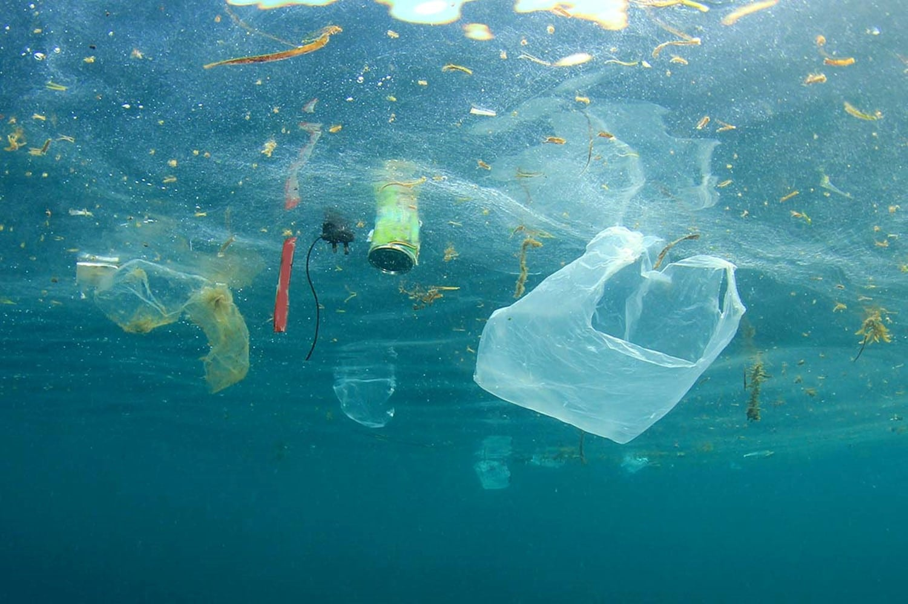
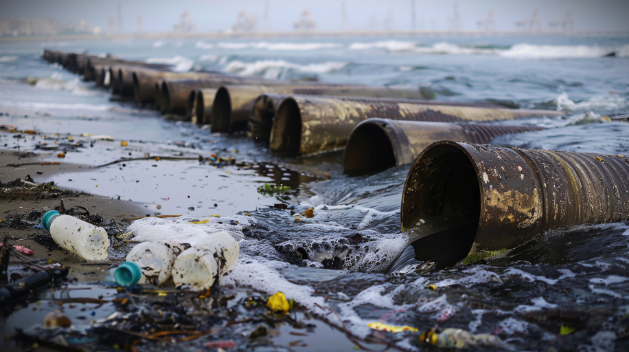
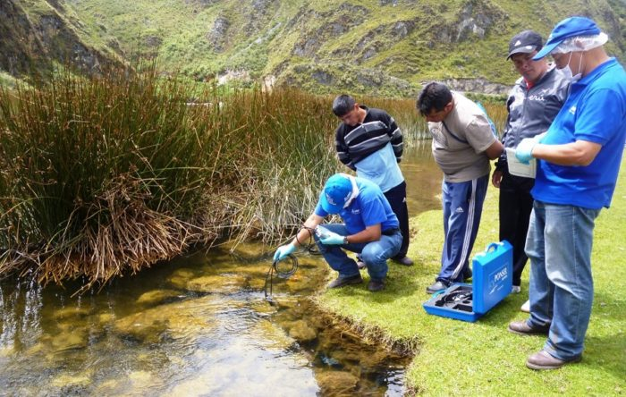
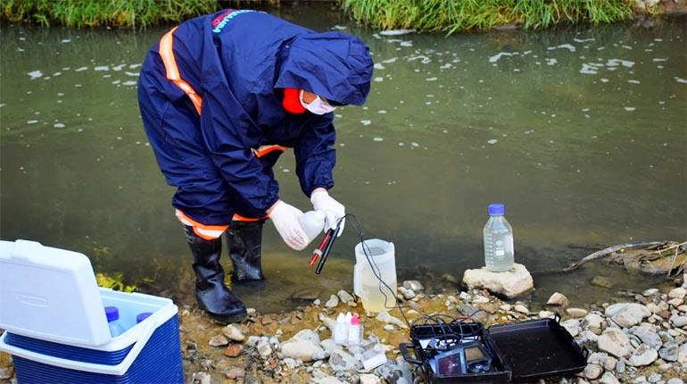
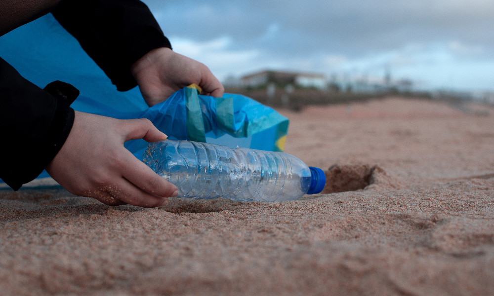

El Agua: Una Responsabilidad Compartida

El agua es un recurso vital para todos los seres vivos y constituye el motor de la mayoría de los procesos ecológicos. Sin embargo, su disponibilidad y calidad están cada vez más amenazadas por diversas actividades humanas. La contaminación, el uso insostenible y la explotación excesiva de los recursos hídricos ponen en peligro no sólo a los ecosistemas acuáticos, sino también a la vida en la Tierra. Para proteger estos recursos, es necesario asumir una responsabilidad colectiva.
¿Qué significa una responsabilidad compartida? Significa que todos, desde los ciudadanos hasta las grandes empresas y gobiernos, deben tomar medidas para reducir el impacto sobre los cuerpos de agua. Las prácticas sostenibles de consumo, el tratamiento adecuado de aguas residuales y la conservación de fuentes hídricas son esenciales para garantizar que el agua siga siendo un recurso disponible y saludable para todos.
Importancia de la cooperación global : La gestión del agua debe ser un esfuerzo cooperativo, especialmente en zonas donde el agua escasea o es compartida por varios países, para evitar conflictos y fomentar el acceso equitativo a este recurso.
"El agua limpia es un derecho humano, no un privilegio."
Principales Causas de la Contaminación del Agua
La contaminación del agua es uno de los problemas ambientales más graves que enfrentamos hoy en día. Las fuentes de contaminación son variadas y están directamente relacionadas con las actividades humanas, que no siempre consideran los efectos a largo plazo sobre los ecosistemas acuáticos.
Residuos industriales : Las fábricas que vierten productos químicos, metales pesados o desechos tóxicos en los ríos y mares son una de las principales causas de la contaminación. Estos contaminantes afectan la fauna acuática y pueden llegar a los humanos a través del agua potable o de los alimentos contaminados (como los peces).
Aguas residuales urbanas : En muchas ciudades del mundo, las aguas residuales de hogares y empresas no reciben un tratamiento adecuado y se vierten directamente en cuerpos de agua, afectando su calidad y contribuyendo a la proliferación de bacterias y virus peligrosos.
Agricultura y pesticidas : La escorrentía de fertilizantes y pesticidas utilizados en la agricultura es otra causa significativa de contaminación. Estos productos químicos pueden alterar los ecosistemas acuáticos y contaminar fuentes de agua potable, afectando tanto la biodiversidad como la salud humana.
Plásticos y microplásticos : Los plásticos son persistentes en el medio ambiente, y los microplásticos (pequeñas partículas que resultan de la elaboración del plástico) se encuentran en grandes cantidades en los océanos, afectando la vida marina y entrando en la cadena alimentaria.
"Evitar la contaminación es más fácil que limpiar lo que ya está dañado."
Impactos del Deterioro de Nuestros Cuerpos de Agua
El deterioro de los cuerpos de agua tiene consecuencias profundas para el medio ambiente y para las sociedades que dependen de estos recursos. Los impactos pueden ser ecológicos, económicos y sociales.
Ecológicos : La pérdida de hábitats acuáticos afecta la biodiversidad. Muchas especies acuáticas dependen de ecosistemas saludables para reproducirse y alimentarse. Cuando estos ecosistemas se destruyen, las especies se ven desplazadas o desaparecen, afectando el equilibrio ecológico.
Económicos : La contaminación y el deterioro de los cuerpos de agua impactan directamente en sectores como la pesca y el turismo. Por ejemplo, las algas tóxicas y la contaminación de las aguas pueden hacer que la pesca se vuelva insostenible y peligrosa. El turismo también se ve afectado cuando las playas o lagos están contaminados, lo que puede causar pérdidas económicas significativas para las comunidades locales.
Sociales : La escasez de agua limpia o el acceso a agua contaminada afecta la salud humana. Enfermedades como el cólera, la fiebre tifoidea y la disentería son comunes en regiones donde el agua está contaminada. Además, los conflictos por el agua son cada vez más frecuentes, especialmente en regiones donde este recurso escasea.
"Cuidar el agua es cuidar la vida misma."
Prácticas de Conservación y Mantenimiento
Para preservar la calidad del agua, es necesario implementar prácticas efectivas de conservación que restauren los ecosistemas acuáticos y prevengan su deterioro.
Restauración de ecosistemas acuáticos : Esto incluye la reforestación de las zonas ribereñas y la recuperación de humedales, que son esenciales para filtrar contaminantes y regular el flujo del agua.
Tratamiento de aguas residuales : Es fundamental implementar sistemas de tratamiento de aguas residuales para evitar que los contaminantes lleguen a los cuerpos de agua. Las tecnologías de tratamiento avanzado pueden eliminar metales pesados, nutrientes en exceso y patógenos.
Educación ambiental : Sensibilizar a la población sobre la importancia de mantener los cuerpos de agua limpios es vital para fomentar prácticas responsables. Las campañas de limpieza de playas y ríos, así como el reciclaje y la reducción del uso de plásticos, son fundamentales para reducir la contaminación.
"Pequeñas acciones generan grandes cambios."
Estrategias para Proteger y Restaurar Ecosistemas
La protección de los cuerpos de agua requiere la adopción de estrategias globales y locales que promuevan la sostenibilidad.
Implementación de normativas ambientales : Las leyes y regulaciones deben ser estrictas y garantizar que las industrias, las zonas urbanas y la agricultura no causen un impacto negativo en los recursos hídricos.
Tecnologías limpias : La adopción de tecnologías que reduzcan el uso de productos contaminantes (como fertilizantes orgánicos en la agricultura o plantas de tratamiento de agua avanzadas) es esencial para reducir la huella ecológica.
Proyectos de restauración ecológica : Los proyectos de restauración de ecosistemas acuáticos, como la plantación de vegetación en las riberas de ríos y yeguas o la recuperación de hábitats naturales para especies acuáticas, son esenciales para restaurar el equilibrio ecológico y mejorar la calidad del agua.
Acciones para Enfrentar la Contaminación Hídrica
Para hacer frente a la contaminación del agua, es necesario que todos los sectores actúen en conjunto:
A nivel individual : Los ciudadanos pueden reducir su impacto ambiental utilizando menos agua, no arrojando productos químicos o plásticos al agua y participando en actividades de limpieza.
A nivel gubernamental : Los gobiernos deben invertir en infraestructura de tratamiento de agua, crear leyes que protejan los recursos hídricos y hacer cumplir regulaciones que restrinjan la contaminación.
A nivel empresarial : Las empresas deben adoptar prácticas de producción limpia, reducir su uso de agua y gestionar adecuadamente los residuos para evitar que contaminen los cuerpos de agua.
A nivel global : Las alianzas internacionales para el intercambio de conocimiento y recursos son clave, ya que la contaminación del agua no respeta las fronteras nacionales. Las organizaciones internacionales pueden jugar un papel crucial en la difusión de buenas prácticas y en la gestión compartida de los recursos hídricos.
Comentarios